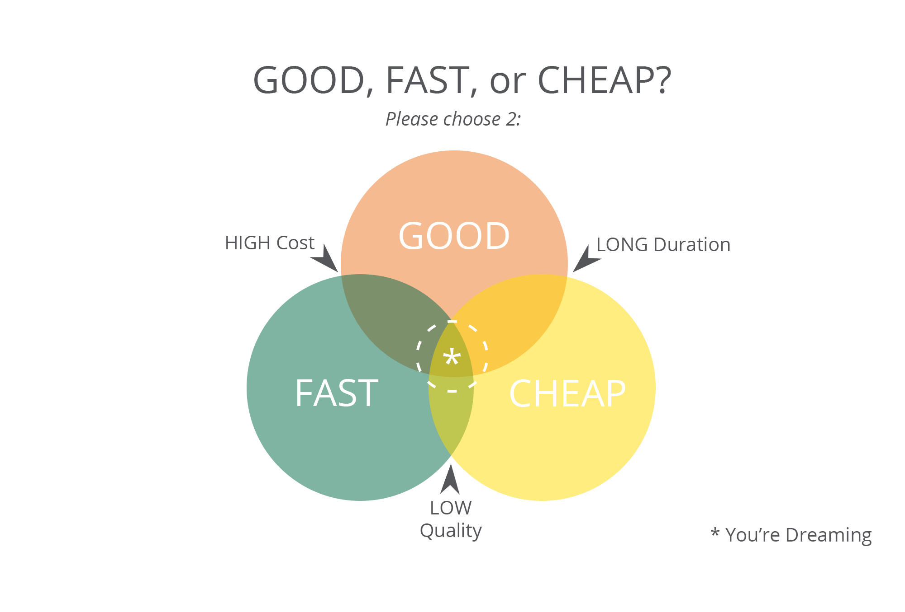

Setting Expectations page
Best practices for setting expectations to clients.
Setting Expectations
Results - Expectations = Performance
The most basic consulting maxim is to exceed expectations. To say this another way, the best way to get your client to love you is to set low expectations and wildly exceed them. In reality, this means:
- Be careful to never over promise, especially when there are external dependencies or unknowns
- Pad estimates to account for external dependencies and unknowns
The Consulting Trifecta

You may have heard the following maxim: cheap, fast, good...pick two. While this may be useful (and true) for sales discussions, a more useful variation for project planning is:
Scope, schedule, resources...pick two
This means that any project lead or PM can “fix”:
- the scope and number of resources is fixed, the schedule must be variable
- the number of resources and schedule is fixed, the scope must be variable
- the scope and schedule is fixed, the number of resources must be variable
Think of a project as a balloon with three edges. If you squeeze two edges, the third must expand. If you squeeze all three edges, the balloon will pop.
Bad or inexperienced project managers will attempt to tell you that all three factors are already set, and we must “work harder” to meet expectations. This is a trap and we must push back immediately or we’ll be setting ourselves up for failure. No matter how small the project, there must be an opportunity at the start for the team to set at least one of these factors.
Pushing back
Inexperienced consultants tend to be pushovers and think of project constraints as fixed and unchangeable.
Experienced consultants recognize that nothing in a project is truly unchangeable. The key to their success is identifying the largest problems standing in the way of the project success and pushing back on them, as hard as necessary.
Balancing progress and oversight
There will always be a tradeoff between moving a project forward and getting sign-off from a client or stakeholder. You may often deal with clients who say they want to be involved in many layers of decisions but they are so busy or non-responsive that progress becomes blocked waiting for their approvals.
We’ve found the best practice for balancing these concerns is to optimize for progress, but give stakeholders plenty of opportunities to weigh in or course correct. In other words, in most cases, move forward with your best judgement, but visibly document your course via emails or tickets, in a way where clients can step in if they desire.
Exercise: Project Planning
Your client informs you that your team will be working on a new feature for your project. They’ve committed to an internal deadline of July 1st, with a non-negotiable set of requirements, and you have a team of yourself and 2 devs to deliver.
What do you do?
Answer
Let them know that plan is likely untenable, and that you’d like to evaluate the scope before committing to that deadline (otherwise there’s risk in not meeting it). Work with them to find a scope that keeps them within their time and staffing constraints. If they are not flexible, explain the scope-resources-deadline trifecta and the risks. Ask them to consider additional resources, or a more flexible deadline.
Principals used:
- The Consulting Trifecta
- Pushing Back
Exercise: The Unresponsive Client
You’re in charge of adding a search box to a component. You could build it into the existing grid in a completely abstract way, which would take 5 days, or you could make it work in the way needed for this specific use case, which would take two days. You ask your client which they would prefer but they are in two days of meetings and not replying promptly. This is the most important feature right now, so switching to something else isn’t a viable option.
What do you do?
Answer
How likely is it that the project will reuse the search feature in a future grid? For example, assume, based on your current knowledge, there’s a less than 25% chance of reuse. Therefore, I would recommend choosing the non-abstract approach, and writing an email, or writing a comment on the ticket tagging your client which summarizes your decision, the reasons for it, and states “I will proceed with this approach, but let me know if you disagree”. Forward progress is being made, but with transparency and giving your client the opportunity to course correct if they have different information.
Principals used:
- Balancing progress and oversight
Exercise: The Difficult Developer
There is one particularly grumpy client developer that joins your team in the middle of the project. Every idea you propose they argue against. They tend to nitpick all your pull requests with bikeshed-type comments. Recently, they proposed that we rewrite our project in Angular because it’s easier to onboard new developers to a popular framework.
What do you do?
Answer
Reach out to the developer and try to get to know them better. Try to understand their concerns and be flexible when necessary. Do your best to communicate your position and find a way to work together. Remind the developer that you share the same goals, and that finding common ground will benefit everyone on the team.
Bring up your concerns during a team retrospective and try to develop consensus on the best approach. If all of that fails, work with the team lead and the client to mediate and identify the best possible outcome.
Principles used:
- Remember that you share common goals
- Building rapport
- Pushing back